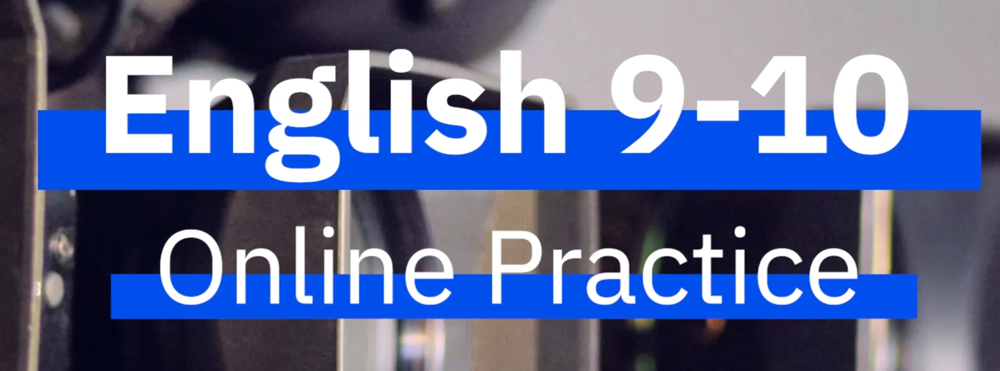

Need
Replace practice traditionally focused on lower-level recall with activities demanding enough for near-native learners across a large new portfolio of instructor-led courses.

How can simple e-learning tools be used to create practice suitably challenging for advanced learners?
For the development of Berlitz’s new CEFR C1–C2 English titles, I conceptualized a learning experience built around exploring original “fauxthentic” media: realistic text, audio, and video content paired with questions that pushed learners to go beyond basic understanding, requiring them to infer and analyze in order to interpret nuanced language. I then led the end-to-end development – from concept through scripting and question writing, media production involving a global cast, and final implementation on two learning portals, touching nearly every piece of content throughout the process.
 Learning Experience DesignerBerlitz2021–2022
Learning Experience DesignerBerlitz2021–2022Replace practice traditionally focused on lower-level recall with activities demanding enough for near-native learners across a large new portfolio of instructor-led courses.
A practice structure pairing original realia-inspired media with layered tasks focusing on nuanced comprehension and linguistic analysis, accompanied by detailed feedback and opportunities for real-world application.
A series of 90+ media pieces featuring 40+ actors from 18 countries, alongside 1000+ accompanying questions and activities.
The model directly supported more than 50,000 enrollments, influenced later B1-B2 products, and became required “Media Analysis” in the Flex adaptation of English 9–10.
As my first major project at Berlitz, English 9-10's Online Practice gave me the opportunity to shape a learning model from its earliest concept through writing, global production, and final implementation. My own intercultural experiences informed some of the project’s most culturally complex content, while working on nearly every asset leveraged my broad range of multimedia skills. Although the effort required to sustain one coherent vision across this large creative endeavor was tremendous, the payoff was quite worth it. Seeing the model later adopted in other languages, and elevated from optional practice to required lesson component, affirmed that the underlying design was both meaningful to learners and durable enough to grow beyond the project for which it was created.
Methods & Tools: Instructional design · Creative direction · Writer training and review · Scriptwriting · Global casting · Zoom production · Audio/video editing · Motion graphics · HTML/CSS